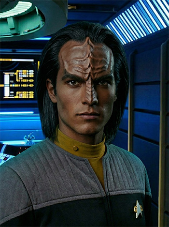

FOTONote
Boregh è un Klingon atipico. Di mole immensa, è però molto goffo e pasticcione. Ciò è probabilmente dovuto proprio alla sua grande mole.
È inoltre, cosa strana per un Klingon, molto mite e tranquillo, oltre che molto riservato.
Come tutti i Klingon è un esperto nell'uso della Bat'telh (forse è anche migliore di molti altri), ma piuttosto che l'uso della forza, preferisce l'uso della parola.
Non è un tipo violento e non si arrabbia mai, ma si narra come leggenda all'Accademia che una volta che qualcuno riuscì a farlo arrabbiare, non bastarono 15 cadetti a fermarlo prima che lui mandasse all'ospedale, per molto tempo, lo sventurato che lo fece incavolare.
È un po' isolato dal resto dell'equipaggio, cosa dovuta al fatto di essere un Klingon nella flotta e per di più un Klingon atipico.
Abilità
- Esperto di Bat'telh.
Hobby
- Giardinaggio.
Incarichi
- XOO - USS Afrodite NCC-1863